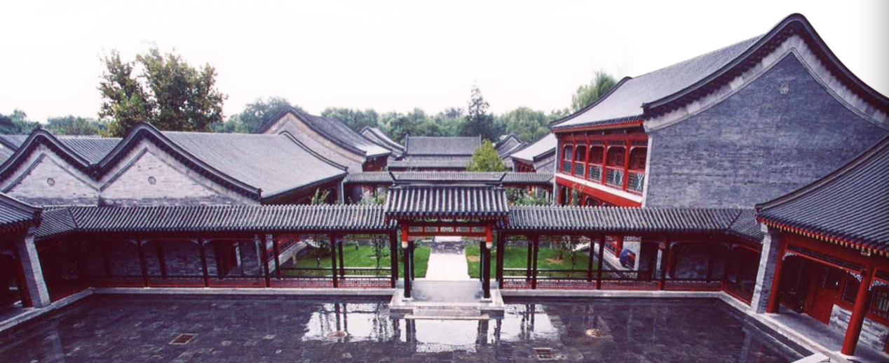
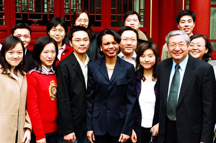
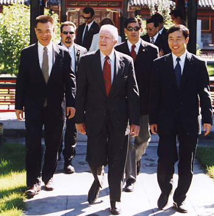

National School of Development
Peking University
Undergraduate Program Information

About National School of Development
National School of Development at Peking University (NSD) was formerly known as the China Center of Economic Research (CCER). Founded by Justin Yifu Lin and five Chinese economists who came back from overseas in 1994, the center has been dedicated to promoting the comprehensive and interdisciplinary education of social sciences, to advancing theoretical and policy research in China, and to serving the needs emerged from China’s reform. In 2015, the Center for New Structural Economics was established in NSD to lead theoretical research in international development and to support policy implementation by utilizing experiences from China and other developing countries. In 2016, the Institute of South-South Cooperation and Development was established to foster high-level talents to possess comprehensive theoretical knowledge, a broad international vision and open mindedness, and abilities to work for national development and to make decisions in light of national conditions for developing countries. NSD started admitting full-time undergraduate students in 2016.
NSD is run by faculty. The open-minded academic environment allows researchers to agree to disagree on academic topics. All faculty have oversea education backgrounds. Through relentless effort over the past twenty years, NSD has formed tailored education programs for students in the field of politics, business, and academics. It is a flagship institution in economics education and research in China. NSD is the first institution in China to establish a systematic modern economics education program that provides education for undergraduate double major in economics program and Master and PhD graduate programs. The undergraduate double major in economics program is the largest undergraduate program at Peking University. The graduate programs are small-sized and highly competitive. Graduate program alumni are well received in both academic institutions and the industry in China and internationally.
The co-founder Professor Justin Yifu Lin is the first Chief Economist of World Bank from a developing country.
Features of the National School of Development
Think Tank
National development is the core subject at NSD. NSD proposes strategies, systems, policies and theoretical questions for major issues arising from China’s reform, modernization and the evolution of international structure.
NSD is actively involved in policy debates aside from its teaching and research activities. Honorary Dean Justin Yifu Lin is a member of Standing Committee of Chinese People’s Political Consultation Conference, the Vice Chairman of All-China Federation of People’s Republic of China, and Councilor at State Council of People’s Republic of China. Professor Gang Yi is the Deputy Director of People’s Bank of China and the Deputy Director of the General Office for Leading Group for Financial and Economics Affairs. Since 2013, Professor Justin Yifu Lin, Professor Guoqing Song, Professor Qiren Zhou and Professor Feng Lu has participated in multiple Prime Minister Economics Group Discussions. Professor Feng Lu has been providing long term academic support for the Ministry of Finance on the matter of G20. Professor Ling Li hosted a special information session for the Central Politburo of the Communist Party of China.
Over the past twenty years, faculty at NSD participated in nearly every reform debate in China and significantly contributed to issues including new rural construction, state-owned enterprise reform, land reform, the Belt and Road Initiative, telecommunication reform, health care reform, exchange rate policy, macroeconomic regulation, stock market regulation and family planning policy. In 2015, NSD was appointed by the State Council of People’s Republic of China as the first higher education institution to perform a third party evaluation of the implementation of the “real economy development via financial support” policy.
International Cooperation and Communication
The NSD has been hosting a variety of high quality international cooperation and communication events. Since 2010, NSD has been hosting the China-US Economic Dialogue. The content of dialogue is presented to both China and US government and serves as an important supplement to the Sino-US Strategic and Economic Dialogue. Since 1998, NSD has been co-hosting the CCER-NBER Annual Conference with National Bureau of Economic Research for seventeen years. NSD also holds international conferences on a variety of topics and hosts visits for international experts and high level foreign governmental officials.
Professor Kenneth Arrow (November 2009, Yan Fu Memorial Lecture)

Condoleezza Rice, Former United States Secretary of State (March 2005)

Jimmy Carter, Former President of the United States (September 2009)
Undergraduate Program Structure
Major
Economics (National Development concentration)
Education Goal
The economics (National Development concentration) program aims to foster future leaders in national development with international vision, creativity, practical skills and knowledge in both breadth and depth. The National School of Development recruits students into the undergraduate program of economics (National Development concentration) with fine-designed courses. Internationalized, cross-disciplinary, and academic-oriented environment are the core to our program. We are devoted to pushing forward humanities and scientific spirit; to promoting innovative and visionary ideas; to establishing a comprehensive study of the economic theory with sound research ability; and to grooming well-rounded talent to serve China’s reform and development. Students will be equipped for economic teaching and research, and will be cultivated as leaders in various sectors, including private firms, policy research institutions, and financial industry.
Program Features
Core Value - NSD aims to establish a fine-designed undergraduate program through an internationalized and interdisciplinary education structure to foster economics research professionals. NSD utilizes its well-structured courses, prestigious faculty, and standardized teaching service to help students form a rigorous foundation in economics and to simultaneously promote interdisciplinary research.
Influential Faculty - The research fields of NSD faculty range from economics, management, demography to political science. All faculty from NSD hold graduate degrees from universities oversea. Six former presidents of the Chinese Economists Society are currently faculty at NSD. All faculty teach undergraduate courses which are well received by students. All faculty hold weekly office hours to promote communication between students and faculty. NSD intends to provide education for students in both the economic field and in life.
Former presidents of the Chinese Economist Society
Rich Education Experience - NSD has over 20 years of experience in providing education for undergraduate double major in economics program, Master program, and PhD program. NSD has also been teaching for the Politics, Philosophy and Economics (PPE) program jointly with Yuanpei College at Peking University. NSD’s rich experience in teaching and the comprehensive teaching structure provides a rigorous foundation for the undergraduate program.
Mentor-Mentee System - NSD’s Mentor-Mentee system matches each student with an academic mentor and a life mentor to help each student find their personalized research area.
Comprehensive Course of Study - The undergraduate program focuses on both breadth and depth. Students are required to take liberal arts courses offered across the university, major core courses, major elective courses and courses from other departments. NSD has designed personalized small-class courses and English courses. In addition, undergraduate students may take graduate level courses, participate in workshops, and participate in graduate level research depending on their abilities.
| Major prerequisite | Major core courses | Courses from other departments |
|---|---|---|
| Mathematical Analysis I | Principles of Economics | Mathematics |
| Mathematical Analysis II | Intermediate Microeconomics | Philosophy |
| Linear Algebra | Intermediate Macroeconomics | History |
| Probability Theory | Econometrics | Sociology |
| Mathematical Statistics | Economics Research Training | Political Science |
| Special Topics on Chinese Economy | International Relations |
Rigorous Research Training - NSD values critical thinking. Faculty at NSD are conducting cutting edge research in many fields of economics and can offer students with a variety of research opportunities. Faculty will supervise students on their undergraduate research project. NSD aims to help students develop their creativity, strengthen their theoretical knowledge, and enhance their practical skills through rigorous research training.
International Communication Experience - NSD aims to cultivate internationalized talents through utilizing its connections with prestigious international academic institutions. Ninety percent of the undergraduate courses will be taught bilingually. Courses taught in English will be offered every semester. Teaching faculty will be consisted of internationally influential professors and visiting scholars. NSD will also host lectures series by Nobel Prize Laureates. NSD encourages students to participate in international exchange programs and will provide financial support for students. Each undergraduate student will have the opportunity to study abroad at a prestigious university for six months. Students may also participate in international conferences with their mentors. NSD currently has exclusive exchange programs with West Point and MFE program at Baruch College, City University of New York.
Practical Experience - Students may participate in social survey, research courses, and projects such as CHADS to apply their knowledge in practice. NSD has established a practice base to encourage students conduct field survey. NSD also encourages students to communicate with peers from other academic disciplines through the undergraduate double major in economics program.
Valuable Alumni Resource - It is the tradition of NSD to connect students with alumni. Alumni relation is a valuable resource for undergraduate students to pursue higher education and career development. Among the 10,000 economics double major alumni from NSD, some went on to pursue higher education at prestigious universities around the world, including Harvard University, Yale University, Princeton University, Stanford University, Peking University, Tsinghua University,and Fudan University, others started their career in a variety of sectors including government, financial industry, education, culture, media, and sports. Among the 1,000 graduate alumni, most Master alumni went on working in the government or renowned companies. Most PhD alumni are working at influential university and research institutes around the globe, including Harvard University, Duke University, UCLA, UC San Diego, University of Wisconsin, Carnegie Mellon University, University of Toronto, Peking University, IMF, and World Bank. Our over 3,000 MBA and EMBA alumni are mostly senior executives of the Fortune 500 companies.
For more information
Website: http://www.nsd.edu.cn/
Telephone: 010-62758978 010-62753082
Email: benkesheng@nsd.pku.edu.cn